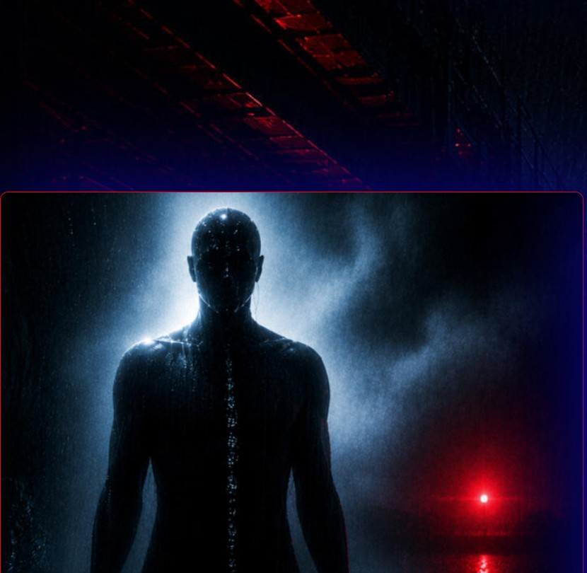
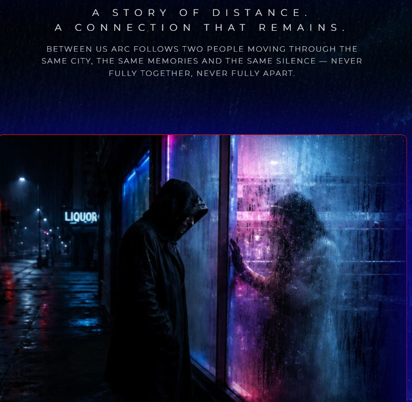
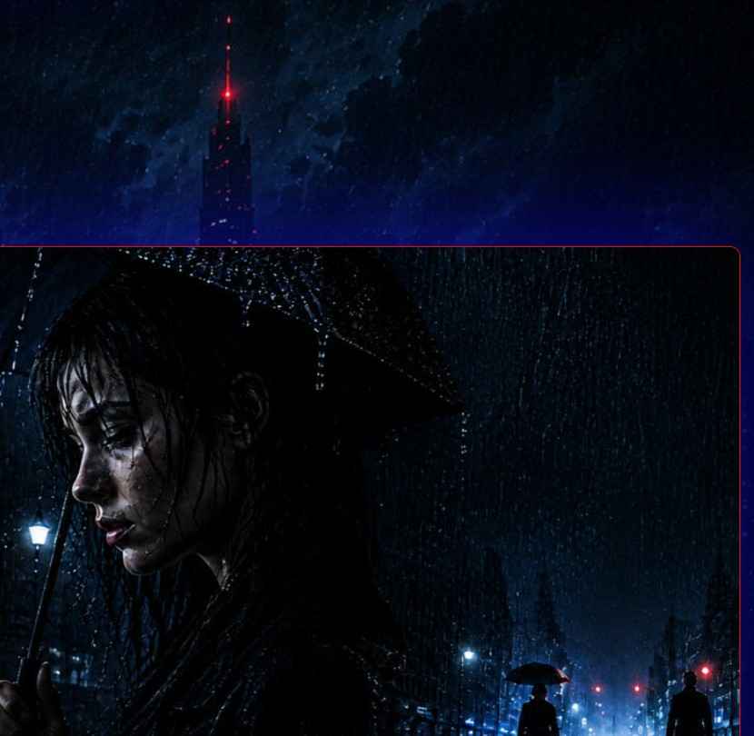
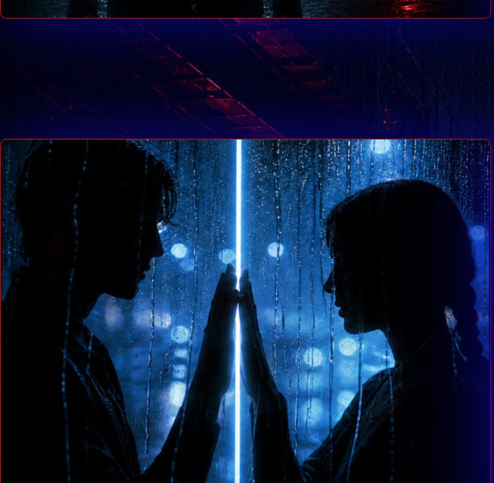
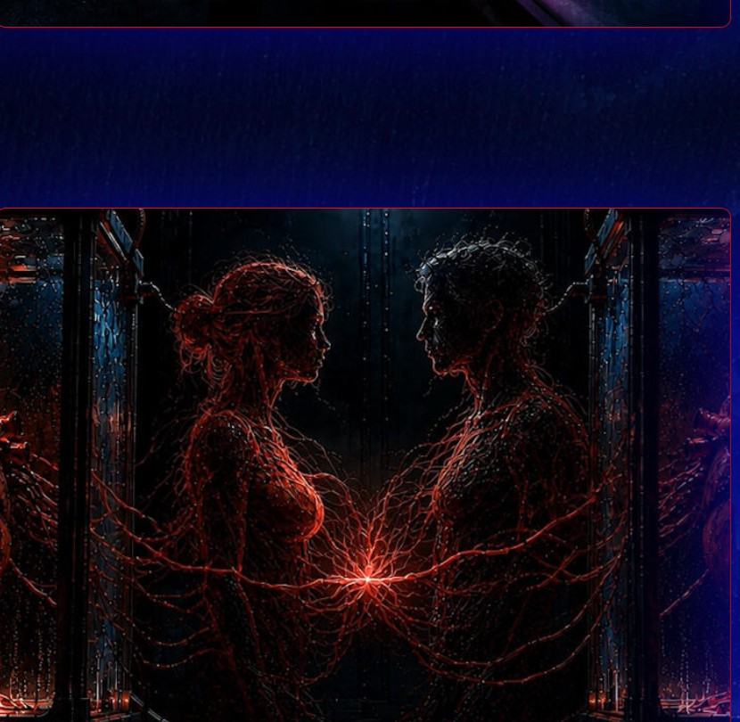
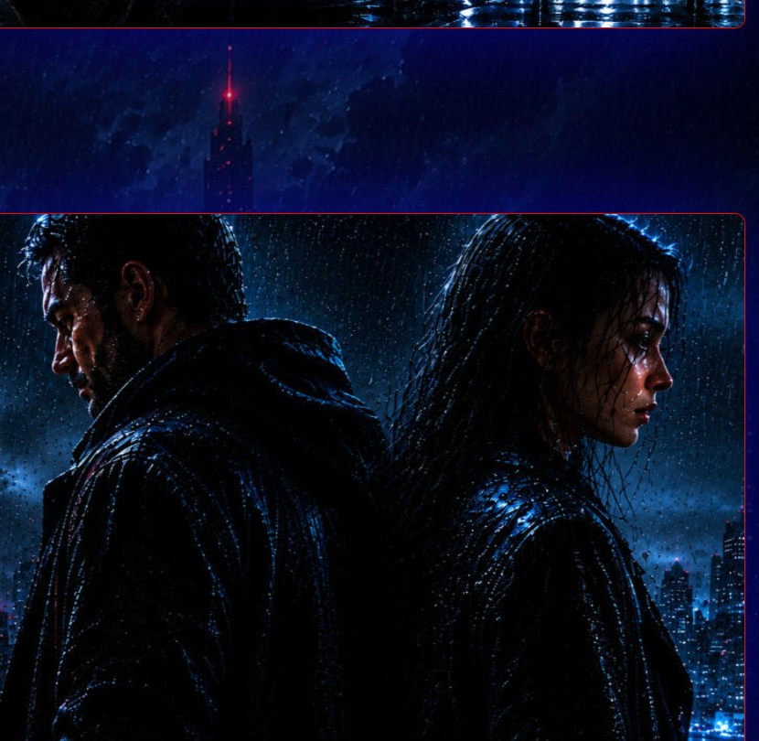
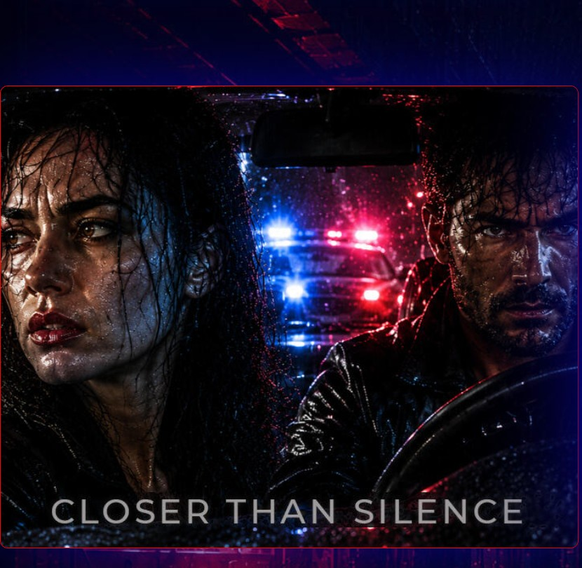
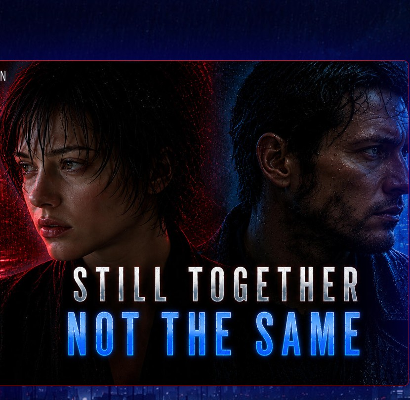
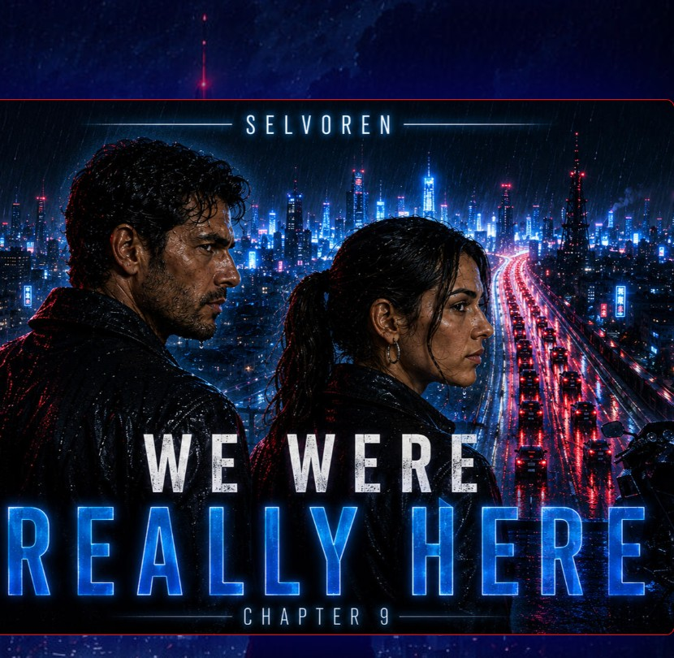

Story Arc 01
BETWEEN US ARC
A story of distance.
A connection that never truly disappears.
Two lives move through the same city, the same memories and the same silence—never fully together, never fully apart.
Transmission status
10 / 10 files available
CHAPTERS
10 cinematic transmissions.
Follow the story in chronological order.

01
Static ShapeThe first fracture.

02
I Don't Let It InGuarding what's left.

03
When We CrossedWhere paths still cross.

04
Between Us, StillCloser than silence.

05
Stay Where It HurtsWhere it still hurts.

06
When It Began to ShowIt started to show.

07
Closer Than SilenceCloser than words.

08
Still Together, Not the SameSome distances remain.

09
We Were Really Here — Ch. 9This much was real.

10
Not Erased — We Are Still HereNot erased. Still here.
SIGNAL: STABLE · MEMORY INTACT · DISTANCE: UNCHANGED · CONNECTION PERSISTS ·
SIGNAL: STABLE · MEMORY INTACT · DISTANCE: UNCHANGED · CONNECTION PERSISTS ·
Never fully together, never fully apart — the connection that remains, even across the distance.